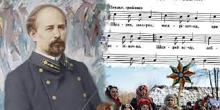
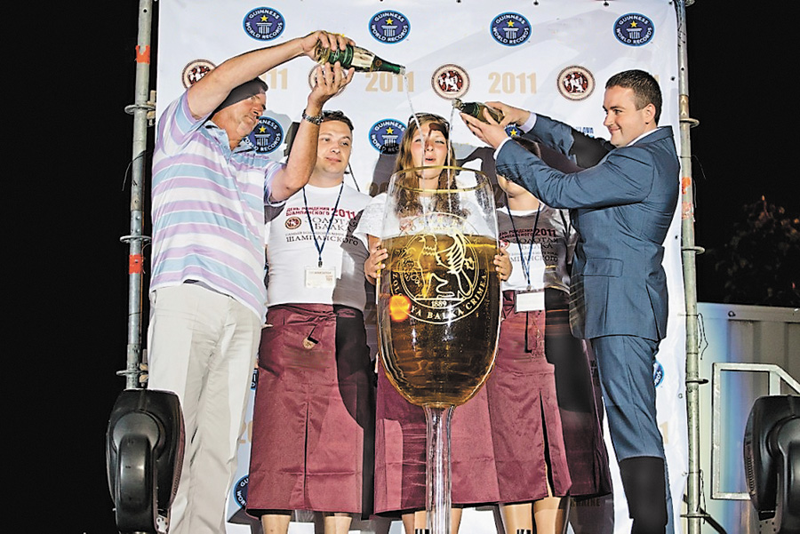

Найбільший літак у світі
Конструкторське бюро “Антонов” розробило найбільший літак у світі – “Мрія” (символічно, чи не так?). Спочатку цей літак повинен був перевозити космічну техніку, але на даний момент Україна, м`яко кажучи, не космічна держава, тому цей гігант займається звичайними вантажними перевезеннями. Мрія українського народу, щоб “Мрія” перевозив українську космічну техніку, вибачте за каламбур.
Найперша конституція у світі
Пилип Орлик – 1710 рік – перша у світі конституція. Для прикладу у США перша офіційна конституція датується 1787 роком, а у Польщі – 1791. Такий він, гетьман війська запорізького.
Бджоли – це у нас у крові
Самий перший у світі рамковий вулик винайшли українці. На даний час наша країна займає одне з перших місць по збору меду у світі. Середня кількість “видобутку” меду на одного чоловіка складає півтора кілограми. Тепер я розумію, чому Віктор Ющенко любив бджіл… Це у нас у крові.
Марганцева руда яка належить українцям (напевно)
Україна зберігає у своїх надрах найбільші в світі запаси марганцевої руди. Але чомусь майже всі шахти належать тільки одній людині, яка обкрадає власний народ. Даю підказу – починається на Рєнат, закінчуєтьсяна на Ахмєтов.
Монастирі
На теренах нашої батьківщини знаходяться три монастирі, які мають статус “Лаври” (чоловічий монастир). Усього в світі шість лавр. Що тут сказати, звичайні українці – духовний народ. До речі, в Україні знаходиться найстаріший (не один з, а най) оствітній заклад у Європі (Східній) – Києво-Могилянська академія. Рік заснування – 1615.
Найглибша станція метро
Станція “Арсенальна” – 105 метрів. Рік відкриття – 1960. Кажуть, що у надрах “Арсенальної” є таємні притаємні схованки для політичної верхівки. У вільний час вони там збираються і розмірковують, як же ще більше збагатити себе (жарт…).
Найдовший інструмент
Звичайно – це трембіта. Неперевершена зовнішня краса і об`ємний звук цього інструменту не може залишити байдужого ні одного українця-козака з шаблюкою, який буде боротися за своє майбутнє до кінця, допоки в силах буде тримати зброю… Щось мене понесло…

Знову найдовший
На цей раз поговоримо про тролейбусні маршрути. Ви ж любите тролейбуси, я – так. Цей маршрут ходить в Криму (тому що Крим – це Україна) і його довжина складає 86 кілометрів.
Тепер найкоротша
Хрещатик – найширша, але і найкоротша головна вулиця столиці у світі. На жаль, я ніколи там не бував, але мені розповідали про неї, багато розповідали…
Найстаріше дерево
На Рівненщині знаходиться дуб, який бачив Шевченка і Мазепу, Хмельницького і Котляревського. Він бачив злети і падіння нашого народу, адже йому 1300 років.
Щоб нас порозривало
В Києві знаходиться третій в світі по відвідуваності Макдольдс. Слова тут будуть зайві. Начебто мінімальна зарплата 1300 гривень, а третій в світі по відвідуваності. В цивілізованих країнах Макдак – це місце, де їдять бідняки, а у нас – рЭс-то-ран.
Вона лунала у фільмі “Сам удома”
Микола Леонтович – Щедрик. Кожного Різдва ця мелодія лунає у багатьох домівках по всьому світі. Геніальний наш народ, але що з цим робити – невідомо. Треба їхати в США (подумали всі). Там можливості, а у нас.. Насправді треба просто бути сильними в все у нас буде добре.

Салоїди (ні)
Цікавий факт, що середньостатистичний українець за рік з`їдає втричі менше сала, ніж його побратим з Німеччини (двуяко прозвучало). Чи то сало приїлося, чи то кум став менше в гості заходити.
Келих який нікому не потрібен
Українці зробили найбільший у світі келих для шампанського. Я вважаю, що цим реально треба пишатися, бо ніхто такого ще не робив, ніхто, чуєте? Ніхто не додумався до такого дибілізму. Від розуму до “нерозуму” один келих, ой, крок.
